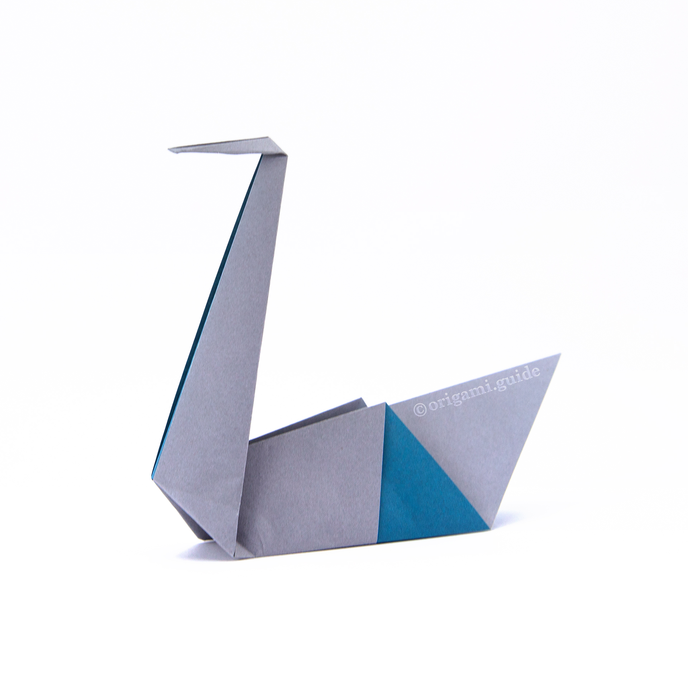

Origami Swan(easy)

step 1. Fold the paper in half and then unfold it.
step 2. Fold both sides in to the centre along the dotted lines.
step 3. Fold the top layers of paper out along the dotted lines.
step 4. Fold the paper in half bringing the bottom up and behind.
step 5. Make an Outside Reverse Fold along the dotted line.
step 6. Make another Outside Reverse Fold along the dotted lines.
step 7. Make a Crimp Fold on the head to form the beak and make another Crimp Fold on the back to form the tail.(for some instructions refer to the website below)